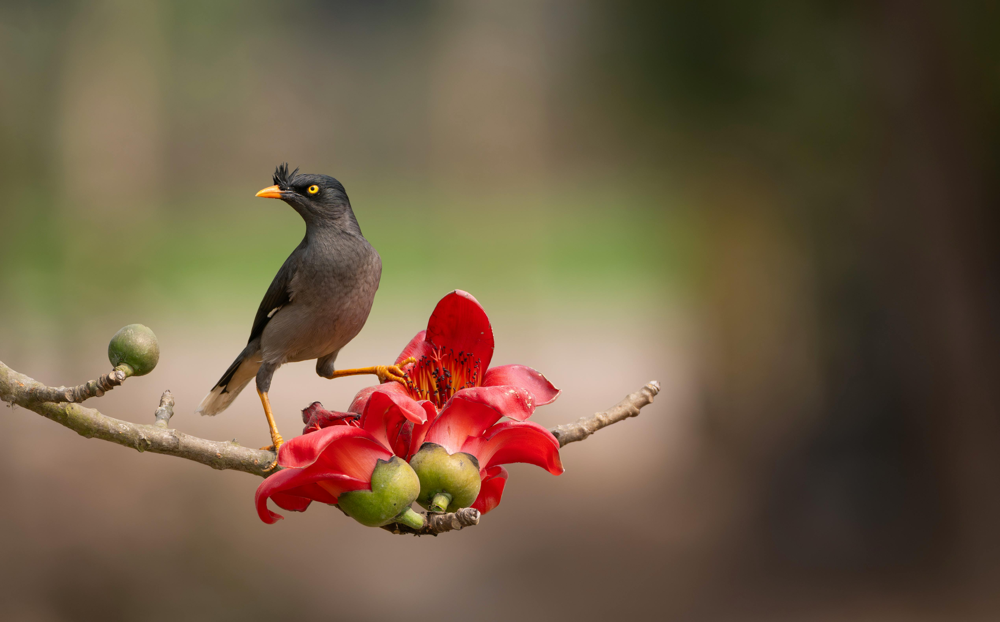
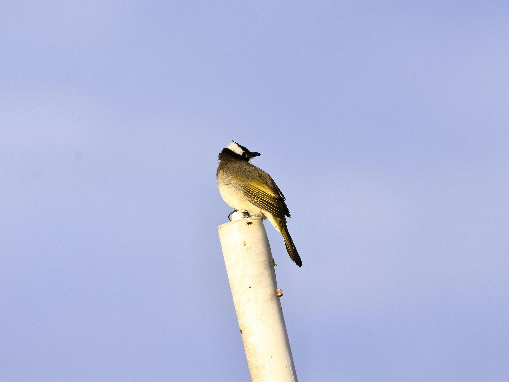
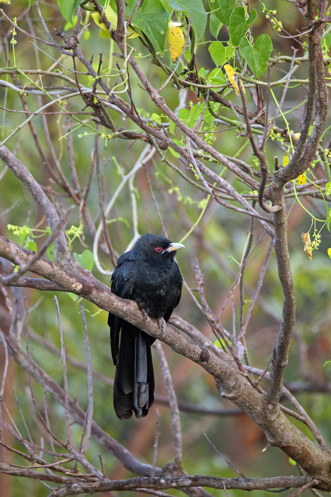

Main Types of Birds
- Javan Myna
- Yellow-Vented Bulbul
- Asian Koel
- Eurasian Tree Sparrow
- Rock Dove
Gallery



Singapore lies directly on the East Asian-Australasian Flyway, serving as a vital refuelling stop for thousands of migratory birds.


